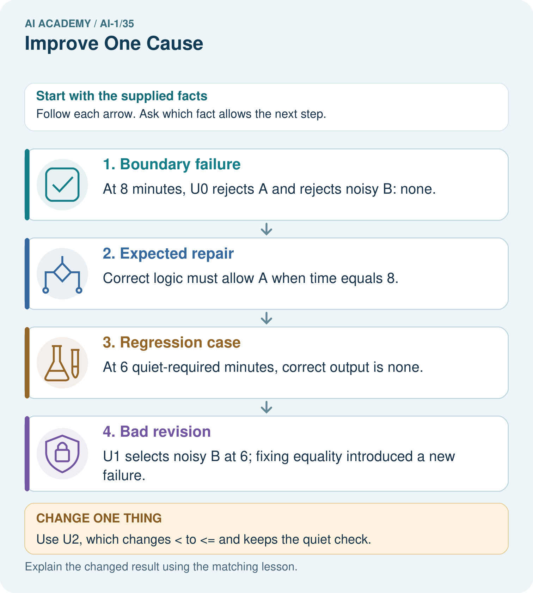

AI Academy · Level 1 · Grade 6 · Week 35 · Teacher guide
Improve One Cause
Learn to understand, design, build, test and explain AI systems responsibly.
Project: Helpful Classroom Sorter
Teacher guide · 1 of 6
Improve One Cause
Teach the learning cycle
Primary target: Repair a located defect without changing the agreed requirements
| Session | Sequence and minutes | Resources |
|---|---|---|
| Session 1 · Understand · 45 min | 0–7: recall and prerequisite; 7–15: inspect the concrete case and predict; 15–30: teacher models the worked trace; 30–40: learners explain a step using the text and visual; 40–45: check the core idea. | Sections 1–6; record the brief recall in the workbook. |
| Session 2 · Practise · 45 min | 0–5: retrieve the procedure; 5–15: W2 completion practice; 15–23: explain and check with a partner; 23–30: each learner answers the misconception check; 30–40: targeted reteaching or a harder variation; 40–45: prepare the investigation. | Sections 7–10; use the matching workbook W2 and misconception check. |
| Session 3 · Investigate and transfer · 45 min | 0–5: retrieve the decision rule; 5–20: investigate or trace; 20–30: start the independent case; 30–38: connect the project; 38–43: act on feedback; 43–45: plan the return check. | Sections 9 and 11–14. Give extra time to finish the full task set; use Section 15 when the week includes a coding lab. |
This is a starting allocation of 135 minutes, not a validated duration. Preserve all named topics. Schedule extra time for connected examples, the full investigation, independent cases and project building. Repeated copies of a case share one recorded attempt; they are not new evidence.
Retrieval answer guidance
Test Edge Cases and Fairness
Without opening the old lesson, explain one key idea from Test Edge Cases and Fairness. Give an example and a mistake that the idea helps you avoid.
Look for: Choose tests just below, at and above a decision boundary
Reference example, not the only acceptable wording: 9 Yes has no match: B1 and B3 are too long and B2 is not quiet; B4 also fails. 10 Yes and 11 Yes select B1, which is quiet and fits at equality or with time left. Fixing the other conditions isolates the time comparison. S rejects equality at B1 and cannot find a later fit for 10 Yes, so incorrectly returns no match.
Build a Paper Prototype
Without opening the old lesson, explain one key idea from Build a Paper Prototype. Give an example and a mistake that the idea helps you avoid.
Look for: Build a runnable paper prototype with explicit instructions and visible state
Reference example, not the only acceptable wording: The kit contains labelled instructions and catalogue, request fields, a marker and a trace sheet with run and version labels. The request and catalogue stay fixed during the run; the current row and trace advance. The final output starts clear. The cards validate, check both conditions, return the first fit, advance after failure and stop with no match after exhaustion.
Find a Real Problem
Without opening the old lesson, explain one key idea from Find a Real Problem. Give an example and a mistake that the idea helps you avoid.
Look for: Describe a specific user difficulty using supplied evidence without inventing its cause
Reference example, not the only acceptable wording: For example: fictional pupils choosing activities in the supplied classroom exercise had to choose again in four of ten requests because the first choice did not fit the time or room conditions. Build an AI app names a solution or construction task without specifying a user difficulty or evidence of need.
Use the student module and workbook section with this exact week title. The worked case, independent question and answers below form one aligned lesson sequence.
What the learner must demonstrate
Version A makes four errors. Version B makes one after lighting, labels and rules all change. What can you conclude, and how would you isolate the effect of lighting?
Concept to explain
An improvement should target evidence from a failure, not random change.
| Term | Meaning |
|---|---|
| root cause | earliest responsible reason for a failure |
| controlled change | one targeted modification while other factors stay fixed |
| retest | repeat the same case after a change |
| regression | previously working behavior that becomes worse |
Prepare the class
Use the supplied scenario, student illustrations and blank paper. For numeric work, offer counters or a calculator after learners show the setup. Fictional records are supplied; personal data and paid accounts are unnecessary.
Allow 80 minutes: recall 8; explanation 12; worked demonstration 15; guided practice 20; independent assessment 15; project and reflection 10. Extend the lab into a second session when needed.
Preparation for the connected explanation
Repair and regression testing concern the implementation of explicit rules, not fitting a model to examples. S0 and T1 are deliberately faulty instructional examples. Pupils whose P1 works should not invent a defect or claim an unneeded improvement. Assess the causal explanation and retained evidence, not only a favourable count. Final evaluation tests a fixed version; development success and a polished presentation cannot replace it.
Readiness answer
Time fits when required minutes are no more than available minutes, including equality. Strictly less than wrongly excludes an exact fit.
Saved P1 and the clearly labelled S0, S1 and T1 comparison instructions described in the lesson
Catalogue B versions 1, 2 and 3, the manual baseline and all earlier development records
Blank change records and an envelope or folder for the candidate; keep reserved final cases teacher-only
End goal for the pictorial case
By the end, I can repair one identified cause and rerun cases that previously passed.
This added worked case illustrates the week’s main idea. Retain all original and connected topics; schedule its practice within the teaching cycle.
Teacher guide · 2 of 6
Explain the mechanism
Explain the mechanism
Follow the information instead of imagining magic inside the machine.
INPUT failure record and suspected cause
PROCESS change one responsible rule, input, or threshold
OUTPUT same tests rerun with before/after evidence
CORE IDEA An improvement should target evidence from a failure, not random change.
UNDER THE HOOD Controlled iteration links an intervention to an observed outcome. Holding test cases and unrelated components constant strengthens causal inference. Improvement claims must include regressions and tradeoffs, not only repaired cases.
Draw a fresh example with all three stages:
Every step connects a claim to observable evidence.
CASE The sorter misclassifies worn labels, so the team changes the text-reading rule or adds a safe visual clue while keeping other parts fixed.
STEP 1 — OBSERVE failure record and suspected cause
STEP 2 — TRACE change one responsible rule, input, or threshold
STEP 3 — CONCLUDE same tests rerun with before/after evidence
MODEL REASONING Name the evidence, suspected cause, single change, and predicted effect before editing. Rerun the full fixed suite, compare case by case, and keep the change only if benefits outweigh new failures.
DO NOT OVERCLAIM A higher pass count can hide a serious new failure; review every changed outcome.
What new evidence could change this answer?
Concrete teaching case
The team changes lighting, labels and rules together; errors fall from four to one.
Can it identify the cause of improvement?
Exact explanation to model
No. Several factors changed. Compare one planned change at a time with controlled conditions.
Explain the added worked example
Finding a failure is useful only if you can explain and check the repair. This week you will locate an incorrect comparison, change it in a labelled version, and test both the revealing case and behaviour that worked before. A repair can solve one problem while introducing another, so one newly passing example is not enough.
Keep catalogue B version 1 in order: B1 Bookmark drawing, 10 minutes, quiet Yes; B2 Story circle, 8 minutes, quiet No; B3 Pattern puzzle, 12 minutes, quiet Yes; B4 Tower challenge, 15 minutes, quiet No. These fictional values assume materials are available. Inputs are whole minutes from 0 to 30 inclusive and Quiet required Yes or No. No allows either quiet or nonquiet activities.
A candidate fits when its duration is no more than the available minutes AND either quiet is not required or the activity is quiet. Return the first fit with a correct reason. Valid input with no fit gives no match after all rows fail. Invalid or missing input needs clarification before search. Each new run starts with validation and a cleared output, then the first row if valid. Suggestions do not book or publish anything. These written rules are not a model fitted from examples.
S version 0 follows the P1 process except that its time check uses strictly less than. On 10 Yes with catalogue B version 1, it reports no match. The expected result is B1 because 10 fits exactly and B1 is quiet. Compare the saved instruction with the trace: the cause is the exclusion of equality, not a need to change the catalogue or expected answer.
Create S version 1 by replacing only the time comparison with no more than. Keep validation, the quiet condition, catalogue order, advancement and stopping rules. Write a change record naming S0, S1, the failing 10 Yes case, the comparison changed and why equality belongs in the rule. Retain the old version and failed trace; do not overwrite them with the new result.
Key terms
| Term | Meaning |
|---|---|
| Defect | A fault in the instructions or implementation that can cause incorrect behaviour |
| Repair | A change intended to correct a located defect |
| Regression | Previously correct behaviour that becomes incorrect after a change |
| Change record | A note of what changed, why, and which versions and tests support it |
| Fixed candidate | A saved version kept unchanged while a specified evaluation is run |
Model the reasoning aloud
Use the complete worked example below before asking learners to complete W2. Reveal a small part, invite a prediction, then explain the deciding step. These teacher notes contain solutions; do not reveal the independent case answer during modelling.
Consider a different proposed repair, T version 1. It accepts equal times but accidentally removes the quiet check. It fixes 10 Yes, yet now returns B2 for 9 Yes. That second request correctly returned no match under S0 because B2 is not quiet. Previously correct behaviour has become wrong: this is a regression.
| 10 Yes; equality repair | B1 with a valid reason | S0 no match; T1 B1; S1 B1 |
|---|---|---|
| 9 Yes; quiet regression check | No match with a valid reason | S0 no match; T1 B2; S1 no match |
| 8 No; another equality case | B2 with a valid reason | S0 no match; T1 B2; S1 B2 |
| 6 No; exhaustion check | No match with a valid reason | S0 no match; T1 no match; S1 no match |
These outputs are worked predictions from the described versions. Your own test record must contain the actual runs and their reasons. T1 should not replace the candidate merely because it passes the first row. For S1, check the revealing equality cases and rerun all four routine cases from Week 33, then validation and the labelled catalogue variations from Week 34. A full pass still needs both the required output and a correct explanation.
| Thinking move | Teacher prompt |
|---|---|
| Plan | What is given? What is the question? Which procedure fits these facts? |
| Do | Point to each input and intermediate step in the worked trace. Name the rule that allows the next step. |
| Check | Does the output answer the question? Which assumption or limitation prevents a larger claim? |
Use the diagram and verbal explanation together. Ask learners to match a sentence to a specific visual step; do not assign learners fixed visual or auditory learning styles.
A pictorial worked case: Improve One Cause
A fictional quiet-activity chooser has a boundary bug and a proposed repair.
The facts we will use
A: quiet Yes, 8 minutes; B: quiet No, 5 minutes. Request quiet required Yes.
U0 accepts only duration<available time. U1 fixes ≤ but accidentally removes the quiet requirement.

Read the picture one step at a time
Why this result follows
A repair must preserve the full contract, not just make one failing example pass. The quiet condition and duration comparison are separate requirements. Changing only the inequality targets the recorded cause; removing the quiet check changes another behavior. Save previously passing cases to reveal such regressions.
What this example does not establish
Two examples establish only these outcomes; further cases are needed before generalising the repair.
Change one thing in the pictured case
Change: Use U2, which changes < to ≤ and keeps the quiet check.
Prediction: At 8 return A; at 6 return none.
Reason: Equality is repaired while B remains ineligible because it is noisy.
Ask while showing the picture
Cover the result. Ask learners to name the inputs and predict the next step. Uncover one step, connect the icon to the actual procedure, and explain its evidence. Then change the supplied condition and compare. The picture is a representation; it does not document execution of a real AI model.
Teacher guide · 3 of 6
Demonstrate and guide practice
Demonstrate and guide practice
Board sequence
Write the given facts: The team changes lighting, labels and rules together; errors fall from four to one.
Write the question to explain: Can it identify the cause of improvement?
Reveal after predictions: No. Several factors changed. Compare one planned change at a time with controlled conditions.
Keep for an independent attempt: Dim photos fail. You change the lighting and all decision rules together; performance improves. Can you tell which change helped? Design a clearer comparison.
Classroom dialogue
Ask: Which facts are given, and which would we have to assume? Learners mark relevant details before discussing answers.
Say: Predict first. Show the rule, information path or calculation that would produce the result. A correct guess is not yet an explanation.
Reveal reasoning one step at a time. Explain why a tempting alternative fails. Write units and denominators for arithmetic, trace conditions for decisions, and identify supporting sources for claims.
In pairs, one learner solves while the other checks evidence; exchange roles. Remove the worked answer before independent assessment.
Model these guided questions
For 9 Yes, required no match; S0 met it but T1 newly returns nonquiet B2 because quiet was removed, so a regression. For 8 No, required B2; S0 already excluded equality and returned no match, so an existing defect. Keep saved versions, change records, exact inputs and catalogues, expected and observed reasons, traces and results for the remaining routine, validation and variation cases. Exit: one repaired case does not check earlier behaviour; deleting the old trace destroys evidence of the defect. Preserve the failure and rerun the wider development set with a new version. Fixing the candidate before reveal prevents tailoring that candidate to the reserved cases.
Case-specific teaching sequence
| Stage | Teacher action |
|---|---|
| Session 1 start to 7 minutes | Retrieve the inclusive time requirement and S0 equality failure. |
| 7 to 20 minutes | Read the repair diagram and complete W1 with a specific comparison change. |
| 20 to 33 minutes | Trace S0, T1 and S1; complete W3 and distinguish old defects from new regressions. |
| 33 to 45 minutes | Begin W2 partner repair checks using saved versions and prepared expectations. |
| Session 2 start to 8 minutes | Continue W2 with validation and catalogue variations; report attempted and unrun cases honestly. |
| 8 to 23 minutes | Complete the guided explanation and organise the candidate evidence folder. |
| 23 to 38 minutes | Collect W4 independently before support; check first-fit and equality reasoning. |
| 38 to 45 minutes | Complete W5 and the exit, record unresolved issues and fix a candidate for final evaluation. |
Reduce help deliberately
Completion task: Plan and operate the S1 repair and regression set described in the lesson, using the appropriate catalogue version for each case. Record expected and observed results separately with reasons and traces. Summarise full passes over all attempted cases, list unrun cases separately and identify any remaining failures. Do not replace observed mistakes with worked answers.
Teacher check: Under B version 1 the listed requests yield B1, B2, no match, no match, B1, B2, no match, B1, then four clarifications for 31, blank minutes, 10.5 and Maybe. B version 2 with 12 Yes yields B3. B version 3 yields B4 for 15 No and no match for 15 Yes. There are 15 planned cases. Correct execution with correct reasons gives 15 of 15; accept honest different observations with investigation. Unrun cases are not passes and the attempted denominator must be stated.
Start by identifying the given inputs together. Leave the intermediate steps blank. If needed, model one step, then withdraw that help on the next step. Move to a full trace only when the partial trace is understood. For partners, alternate explainer and checker; collect a response from every learner before discussion.
Individual reasoning check
Use the worked case for Improving and checking regressions. Proposed explanation: “One repaired example proves improvement everywhere”. Decide whether this explanation is supported. Point to the step or supplied fact that decides; explain your repair if needed.
Expected correction: Check the revealing case and previously successful behaviour under recorded conditions.
Collect explanations, not only yes/no votes. If a misunderstanding is common, re-model the relevant step for the class. If it affects a few learners, give a short targeted group explanation while others solve a more demanding variation.
Pictorial practice question
Explain why “our repaired version now picks something” is not enough to show success at 6.
Reasoned teacher answer
Any chosen activity must be quiet and fit the time. B is noisy, so picking it violates the contract; none is the correct output.
Changed-case reasoning: At 8 return A; at 6 return none. Equality is repaired while B remains ineligible because it is noisy.
Collect each learner’s explanation before discussion. Use the first missing connection between input, deciding step and result to choose support. This question is worked-case practice, not fresh mastery evidence.
Teacher guide · 4 of 6
Run the weekly evidence lab
Run the weekly evidence lab
Predict first, test honestly, and explain what the evidence means.
State your prediction before the result is known.
Complete the task: Revise one rule or input and rerun the same tests.
Keep a normal case and an edge case clearly separated.
Record what happened—even when it does not match your prediction.
Explain the result, one limitation, and the next useful test.
INDEPENDENCE After support is removed, repeat the proof with a fresh case.
Make the lab runnable
Use the concrete case as the shared normal case and the independent question as a second case. Each pair creates a boundary or missing-information case and predicts its result before testing. Keep the expected result separate from an observed mistake.
| Record | What to capture |
|---|---|
| Input or evidence | Exact data, instruction or claim |
| Expected result | Answer or safe fallback declared before the run |
| Observed result | Actual result, including errors |
| Explanation | Rule, calculation or evidence explaining the outcome |
| Next test | One justified change and a new prediction |
Diagnose and reteach
CLAIM TO REPAIR An improvement proves every change was useful.
For guessing, return to given facts and request a trace. For vocabulary without application, use one example and one non-example. For arithmetic errors, check the setup before the calculation. Finish with a different uncoached case before recording mastery.
Address these additional misconceptions
One repaired example proves improvement everywhere: Check the revealing case and previously successful behaviour under recorded conditions.
Any failure after editing is a regression: Show that the same behaviour was correct before the change; otherwise it may be an existing defect.
A good project must contain a repair: An unchanged correct version can be justified with honest evidence.
A seen final case becomes unseen after a new version label: Once it guides revision, it is development evidence for that revision.
Match the support to the first error
| What the response shows | Next teaching action |
|---|---|
| Missing or misread facts | Read the case aloud, mark supplied versus unknown facts, and let the learner restate it. |
| Wrong procedure | Return to the deciding step in the worked case. Contrast it with the proposed incorrect explanation. |
| Arithmetic or implementation error | Trace intermediate values or lines; preserve the first mismatch and retry that step. |
| Correct result without a reason | Ask for a trace and a changed case before marking independent understanding. |
| An unsupported wider claim | Ask which supplied evidence supports the claim and which further observation would be needed. |
Offer an oral explanation, drawing, enlarged visual or fewer examples when that removes a reading/writing barrier. Keep the same reasoning goal. Stretch secure learners by changing a boundary or assumption and asking them to defend the effect, not simply by assigning more of the same questions.
Teacher guide · 5 of 6
Assess and explain the answers
Assess and explain the answers
Worked case answer
No. Several factors changed. Compare one planned change at a time with controlled conditions.
Independent question
Dim photos fail. You change the lighting and all decision rules together; performance improves. Can you tell which change helped? Design a clearer comparison.
Expected independent answer
No. Change one factor at a time and compare the same test cases. Better lighting alone versus the original conditions would help isolate its effect.
What counts as evidence
| Criterion | 0 points | 1 point | 2 points |
|---|---|---|---|
| Result | Incorrect or absent | Partly correct | Correct with necessary conditions |
| Reasoning | No supporting trace | Some steps | Clear mechanism, calculation or source support |
| Limit | Overclaims certainty | Vague limitation | Relevant uncertainty or missing fact |
| Transfer | Copies without adapting | Adapts with prompts | Solves a changed case independently |
Use 6/8 as a classroom checkpoint, with 2 required for both Result and Reasoning. This is a proposed teaching rule, not a validated certification threshold. Do not count a coached answer as independent mastery; correct unsafe or unsupported claims regardless of total.
Feedback
Ask the learner to find the evidence that challenges this claim: “An improvement proves every change was useful.” Keep the first attempt and an uncoached retry separate.
Original transfer answer
B has fewer recorded errors under changed conditions; no single change is proven responsible. Compare the same fixed version and comparable cases with only lighting changed, repeat where useful and keep labels constant. Reserve fresh tests for the selected final version.
Explanations for the additional workbook examples
W1 Write the change record
Use S0’s failure on 10 Yes with catalogue B version 1. Record the expected and incorrect outputs, the faulty time comparison, the exact S1 correction and the other conditions that must remain. Explain what old evidence to preserve.
Expected B1 with equality and quiet satisfied; S0 incorrectly returns no match because its time condition is strictly less than. S1 uses no more than, including equality. Preserve validation, quiet, first-match order, advancement, stopping and reset. Save S0, its failing trace and exact request/catalogue labels beside the new S1 change record and rerun.
W2 Check the repair and earlier behaviour
Plan and operate the S1 repair and regression set described in the lesson, using the appropriate catalogue version for each case. Record expected and observed results separately with reasons and traces. Summarise full passes over all attempted cases, list unrun cases separately and identify any remaining failures. Do not replace observed mistakes with worked answers.
Under B version 1 the listed requests yield B1, B2, no match, no match, B1, B2, no match, B1, then four clarifications for 31, blank minutes, 10.5 and Maybe. B version 2 with 12 Yes yields B3. B version 3 yields B4 for 15 No and no match for 15 Yes. There are 15 planned cases. Correct execution with correct reasons gives 15 of 15; accept honest different observations with investigation. Unrun cases are not passes and the attempted denominator must be stated.
W3 Reject a repair that breaks quiet requests
T1 accepts equal times but omits the quiet check. Explain why it passes 10 Yes yet fails 9 Yes. Use S0’s earlier correct result for 9 Yes to justify the word regression. What should change in T1, and which two cases should be rerun first?
At 10 Yes, first B1 fits and happens to be quiet, so the omission is hidden. At 9 Yes, T1 selects B2 on time despite its nonquiet label; required output is no match. S0 correctly gave no match on that request, so the new failure is a regression. Restore the quiet condition combined with inclusive time; rerun 10 Yes for the repair and 9 Yes for the regression, then the wider set.
W4 Audit a different proposed repair
Equipment catalogue E lists E1 first with capacity 4 and E2 second with capacity 8. Valid whole group sizes are 1 to 10. Choose the first capacity at least the group size, or no match; invalid input needs clarification. Old U0 uses strictly greater capacity and stops at the first fit. Proposed U1 includes equality but keeps searching and returns the last fit. Independently compare U0, U1 and the requirement for groups 8 and 3. Identify the repair and regression, propose U2 and give one validation check. No booking occurs.
For 8, U0 returns no match, U1 returns E2 and the requirement is E2: equality is repaired. For 3, U0 returns E1 correctly but U1 returns E2, violating first-fit order: a regression. U2 includes equality and stops immediately at the first fit, giving E2 for 8 and E1 for 3. Preserve both old traces and rerun both cases plus wider tests. Group 0 or 11, a blank or a nonwhole size needs clarification before searching.
W5 Protect the meaning of final evaluation
After seeing a reserved final case fail, a team edits its candidate, reruns that same case and calls the result “a successful unseen test of the new version”. Explain what is wrong and what should be recorded instead. State what must be saved before an evaluation begins.
The case informed the repair and is now seen development evidence for the new version. Preserve the original candidate and its final result, label the revision and describe the repeated case as a repair check. A fresh independent evaluation needs new reserved cases for the fixed revision. Save complete instructions, catalogue, requirements, version label, change history, development results and known limitations before evaluation.
Assess independent transfer
Selected case: Equipment catalogue E lists E1 first with capacity 4 and E2 second with capacity 8. Valid whole group sizes are 1 to 10. Choose the first capacity at least the group size, or no match; invalid input needs clarification. Old U0 uses strictly greater capacity and stops at the first fit. Proposed U1 includes equality but keeps searching and returns the last fit. Independently compare U0, U1 and the requirement for groups 8 and 3. Identify the repair and regression, propose U2 and give one validation check. No booking occurs.
Selected case answer
For 8, U0 returns no match, U1 returns E2 and the requirement is E2: equality is repaired. For 3, U0 returns E1 correctly but U1 returns E2, violating first-fit order: a regression. U2 includes equality and stops immediately at the first fit, giving E2 for 8 and E1 for 3. Preserve both old traces and rerun both cases plus wider tests. Group 0 or 11, a blank or a nonwhole size needs clarification before searching.
| Dimension | Evidence required |
|---|---|
| Explanation | Names the applicable idea or procedure and ties it to the supplied facts. |
| Trace and result | Preserves the given inputs and shows the relevant intermediate steps; distinguishes a prediction from an observed execution. |
| Limits | States the assumptions, missing evidence or conditions under which the result would change. |
Record each dimension as not yet, with support, or independent. Accept a valid alternative procedure with a defensible trace. Do not penalise an honestly recorded model failure if the learner correctly explains its evidence and limits.
Feedback that the learner uses
Name the earliest unsupported step and give one action to repair it. Have the learner make that repair now and explain why. Then assess the relevant skill on a fresh, fully specified case. Confirm it was not previously practised with feedback; solve and check the new case before assigning it. A follow-up design prompt is a starting brief, not automatically an equivalent test.
Teacher guide · 6 of 6
Connect and extend learning
Connect and extend learning
Helpful Classroom Sorter
Create sorter version 2 with one evidence-linked change and a before/after test table.
Keep the decision, input, result, explanation and remaining limitation in the project evidence record. Retrieve this record next week rather than restarting the project.
Support and stretch
Use physical cards, spoken explanations and a three-stage drawing. Read aloud without giving the answer. Stretch: compare two mechanisms with the same visible output and explain what evidence distinguishes them.
Exit reflection
Ask for one decision the learner can now justify and one situation requiring more evidence or human review. Confidence ratings are separate from correct independent performance.
Bridge to the next week
Next: Week 36: Expo and Defense. Retrieve today’s evidence and identify what carries forward and what is new.
Support and fresh reassessment
Use separate cards for time or capacity, quiet, and first-match stopping so pupils can point to the changed condition. Provide change-record headings without supplying the diagnosis. Partners may divide execution and recording, then swap; collect the independent audit before hints. Extension: explain why a higher total can still conceal a serious regression and why individual failures matter.
W4 must identify U0 no match and U1 E2 for group 8, then U0 E1 and U1 E2 for group 3, with equality repaired but first-match stopping broken. U2 needs both inclusive capacity and immediate first-fit stopping. After support, retry with F1 capacity 5 then F2 capacity 9, same input range: group 9 exposes the equality defect and group 2 exposes the last-fit regression. Require fresh reasoning and one valid clarification test.
Week 36 evaluates a fixed candidate with reserved cases and asks pupils to defend their project using results, failures, a baseline and explicit limitations.
Plan the delayed return
Suggested return points in this level: ai-1/36. Use actual classroom dates, adjusting for holidays and gaps. One, three and six teaching weeks are scheduling choices, not a claimed optimal spacing.
At a delayed check, ask for the idea from memory and a changed application. Compare with the earlier independent response and record support used. For a new level, revisit the previous capstone before checking the new prerequisites.
| Record | Teacher evidence |
|---|---|
| Learner code and date | |
| Concept and case used; prior exposure | |
| Explanation / trace / limits | |
| Support and first repair | |
| Changed case and delayed outcome | |
| Next teaching action |
Use the evidence to choose reteaching or the next step. A completed page, confidence rating or attractive project does not by itself demonstrate understanding.
Project evidence from this case
Maintain sorter regression tests and compare complete version traces, retaining new failures rather than hiding them.